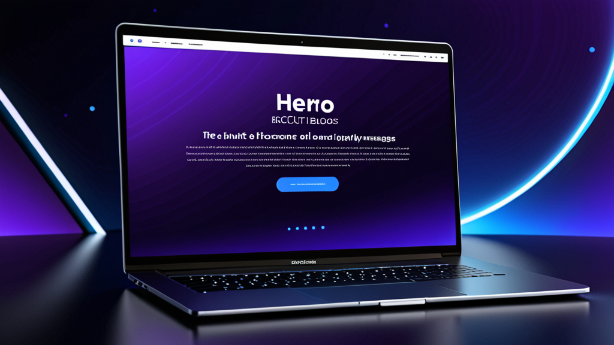

भर्ती संदेशों के लिए सर्वश्रेष्ठ AI उत्तर उपकरण: स्मार्ट आउटरीच के लिए रिक्रूटर की गाइड
अगर आपने कभी किसी निष्क्रिय उम्मीदवार को व्यक्तिगत LinkedIn संदेश टाइप करने में दस मिनट से अधिक बिताए हैं, तो आप इस दर्द को जानते हैं। आप चाहते हैं कि यह मानवीय लगे, उनके विशिष्ट अनुभव का उल्लेख करे, और सही कॉल टू एक्शन शामिल करे — बिना गलती से गलत कंपनी का नाम चिपकाए।
भर्ती संदेशों के लिए सर्वश्रेष्ठ AI उत्तर उपकरण इसी समस्या का समाधान करते हैं। वे आपको ऐसा आउटरीच तैयार करने में मदद करते हैं जो व्यक्तिगत लगे, टेम्पलेटेड नहीं। लेकिन सभी उपकरण एक जैसे काम नहीं करते, और उन्हें प्रभावी ढंग से उपयोग करने का तरीका जानना ही रोबोट जैसा लगने और एक ऐसे रिक्रूटर की तरह लगने के बीच का अंतर है जिसने वास्तव में अपना होमवर्क किया हो।
यह गाइड बताती है कि AI रिक्रूटर असिस्टेंट में क्या देखना चाहिए, इसे अपनी आवाज़ खोए बिना कैसे उपयोग करें, और आपकी प्रतिक्रिया दरों को बेहतर बनाने के लिए व्यावहारिक सुझाव।
रिक्रूटर्स को संदेश लिखने का बेहतर तरीका क्यों चाहिए?
रिक्रूटर हर हफ्ते दर्जनों — कभी-कभी सैकड़ों — संदेश भेजते हैं। प्रत्येक के लिए कॉन्टेक्स्ट स्विचिंग की आवश्यकता होती है: उम्मीदवार की प्रोफ़ाइल की समीक्षा, नौकरी विवरण की जाँच, और एक ऐसा संदेश तैयार करना जो भीड़भाड़ वाले इनबॉक्स में अलग दिखे।
परिणाम? कई रिक्रूटर सामान्य टेम्पलेट्स पर वापस आ जाते हैं। उम्मीदवार इसे तुरंत पहचान लेते हैं। LinkedIn डेटा के अनुसार, InMail के लिए प्रतिक्रिया दर औसतन 20-25% होती है — और जब संदेश बड़े पैमाने पर उत्पादित लगता है, तो यह संख्या काफी गिर जाती है।
एक रिक्रूटर मैसेज जनरेटर केवल समय नहीं बचाता। यह आपको वॉल्यूम में गुणवत्ता बनाए रखने में मदद करता है। जब आप एक ड्राफ्ट तैयार कर सकते हैं जो उम्मीदवार की भूमिका, उद्योग, और उनकी प्रोफ़ाइल से एक प्रासंगिक विवरण खींचता है, तो आपको उत्तर मिलने की अधिक संभावना होती है।
भर्ती संदेशों के लिए सर्वश्रेष्ठ AI उत्तर उपकरणों में क्या होना चाहिए?
हर AI लेखन उपकरण भर्ती के लिए नहीं बना है। कोई चुनने से पहले, यहाँ देखें कि क्या देखना चाहिए:
1. कॉन्टेक्स्ट जागरूकता
उपकरण को समझना चाहिए कि आप कौन हैं, उम्मीदवार कौन है, और आप किस भूमिका के लिए भर्ती कर रहे हैं। सामान्य AI चैटबॉट जो कॉन्टेक्स्ट नहीं लेते, अस्पष्ट और अनुपयोगी ड्राफ्ट तैयार करेंगे।
2. टोन नियंत्रण
आपको टोन को समायोजित करने की क्षमता चाहिए — पेशेवर और औपचारिक से लेकर आकस्मिक और सीधे तक। एक उम्मीदवार आउटरीच टूल जो केवल एक शैली में लिखता है, विभिन्न भूमिकाओं और उद्योगों में काम नहीं करेगा।
3. प्लेटफ़ॉर्म एकीकरण
सबसे अच्छे उपकरण वहाँ काम करते हैं जहाँ आप पहले से काम करते हैं: LinkedIn Recruiter, Greenhouse, Lever, Workday। टैब के बीच कॉपी-पेस्ट करना ऑटोमेशन के उद्देश्य को विफल करता है।
4. गोपनीयता और नियंत्रण
आपको कभी भी अपनी API कुंजी के उजागर होने या आपके संदेशों के ऑटो-सेंड होने की चिंता नहीं करनी चाहिए। भर्ती संदेशों के लिए सर्वश्रेष्ठ AI उत्तर उपकरण आपको पूरा नियंत्रण देते हैं कि क्या भेजा जाता है और आपके डेटा को स्थानीय रखते हैं।
AI रिक्रूटर असिस्टेंट का उपयोग कैसे करें बिना AI जैसा लगे
सबसे अच्छा उपकरण भी कठोर आउटपुट दे सकता है यदि आप इसे गाइड न करें। यहाँ मानवीय स्पर्श बनाए रखने का तरीका है:
एक मजबूत प्रॉम्प्ट से शुरू करें
बस "generate" न दबाएं। उपकरण को विशिष्ट विवरण दें:
- उम्मीदवार की वर्तमान भूमिका और कंपनी
- उनकी प्रोफ़ाइल से एक विशिष्ट प्रोजेक्ट या उपलब्धि
- यह भूमिका उनके करियर पथ के लिए क्यों प्रासंगिक है
उदाहरण प्रॉम्प्ट:
"Spotify में एक Senior Product Manager को एक छोटा LinkedIn संदेश लिखें। फीचर पर्सनलाइज़ेशन पर उनके काम का उल्लेख करें। भूमिका एक Series B फिनटेक स्टार्टअप में Product Lead की है। टोन: मैत्रीपूर्ण लेकिन पेशेवर।"
आउटपुट को संपादित करें
भेजने से पहले हमेशा ड्राफ्ट पढ़ें। किसी भी अप्राकृतिक वाक्यांश को हटाएं। एक व्यक्तिगत प्रश्न या अवलोकन जोड़ें जो केवल आप ही नोटिस कर सकते हैं। AI एक शुरुआती बिंदु है — आपकी आवाज़ संदेश को पूरा करती है।
विभिन्न चरणों के लिए अलग-अलग टेम्पलेट का उपयोग करें
एक कोल्ड आउटरीच संदेश को अस्वीकृति पत्र की तरह नहीं लगना चाहिए। एक AI रिक्रूटर असिस्टेंट को आपको इसके बीच स्विच करने देना चाहिए:
- प्रारंभिक आउटरीच
- फ़ॉलो-अप (यदि कोई प्रतिक्रिया नहीं)
- इंटरव्यू निमंत्रण
- अस्वीकृति या अपडेट
प्रत्येक चरण के लिए एक अलग टोन और विवरण के स्तर की आवश्यकता होती है।
व्यावहारिक उदाहरण: AI सहायता से पहले और बाद में
आइए वास्तविक परिदृश्य देखें जहाँ AI उपकरण संदेश को बेहतर बनाता है।
कोल्ड आउटरीच
पहले (सामान्य टेम्पलेट):
"नमस्ते [नाम], मैंने आपकी प्रोफ़ाइल देखी और सोचा कि आप हमारी कंपनी में एक भूमिका के लिए बिल्कुल सही होंगे। अगर आप रुचि रखते हैं तो मुझे बताएं।"
बाद में (AI रिक्रूटर असिस्टेंट के साथ):
"नमस्ते Sarah, HubSpot पर यूज़र रिटेंशन पर आपका काम मेरी नज़र में आया — विशेष रूप से वह अभियान जिसने चर्न को 12% कम किया। हम एक Series A कंपनी में ऐसी ही ग्रोथ टीम बना रहे हैं और आपकी विशेषज्ञता का उपयोग कर सकते हैं। इस सप्ताह एक त्वरित चैट के लिए तैयार हैं?"
दूसरा संदेश विशिष्ट काम का उल्लेख करता है, शोध दिखाता है, और एक स्पष्ट प्रश्न पूछता है। यही डिलीट और रिप्लाई के बीच का अंतर है।
फ़ॉलो-अप
पहले:
"बस अपने पिछले संदेश पर फ़ॉलो-अप कर रहा हूँ। अगर आप रुचि रखते हैं तो मुझे बताएं।"
बाद में:
"नमस्ते Sarah — मुझे पता है आप व्यस्त हैं, इसलिए मैं इसे छोटा रखूंगा। अगर समय सही नहीं है, तो कोई बात नहीं। लेकिन अगर आप भूमिका के बारे में उत्सुक हैं, तो मुझे और विवरण साझा करने में खुशी होगी। किसी भी तरह, इसे विचार करने के लिए धन्यवाद।"
यह फ़ॉलो-अप उम्मीदवार के समय को स्वीकार करता है और दबाव हटाता है, जो अक्सर प्रतिक्रिया की ओर ले जाता है।
बेहतर उम्मीदवार प्रतिक्रिया दरों के लिए सुझाव
भर्ती संदेशों के लिए सर्वश्रेष्ठ AI उत्तर उपकरणों का उपयोग करना समीकरण का एक हिस्सा है। यहाँ आपके आउटरीच को बेहतर बनाने के लिए अतिरिक्त रणनीतियाँ हैं:
प्रोफ़ाइल से परे वैयक्तिकृत करें
उनकी हाल की पोस्ट, किसी आपसी कनेक्शन, या उनके द्वारा भाग लिए गए कॉन्फ्रेंस से कुछ उल्लेख करें। AI हमेशा इन बारीकियों को नहीं पकड़ सकता — इन्हें मैन्युअल रूप से जोड़ें।
इसे छोटा रखें
उम्मीदवार मोबाइल पर संदेश पढ़ते हैं। अधिकतम 3-5 वाक्य रखें। यदि आपका AI ड्राफ्ट लंबा है, तो इसे छोटा करें।
कम-बाधा वाला अनुरोध शामिल करें
"क्या हम कॉल शेड्यूल कर सकते हैं?" के बजाय "अगर आप उत्सुक हैं तो जॉब डिस्क्रिप्शन साझा करके खुशी होगी" आज़माएं। कम प्रतिबद्धता = अधिक प्रतिक्रिया।
स्पष्ट विषय पंक्ति का उपयोग करें (ईमेल के लिए)
यदि आप Greenhouse या Lever जैसे ATS का उपयोग कर रहे हैं, तो आपका संदेश उनके इनबॉक्स में आ सकता है। "[कंपनी] में आपके अनुभव के बारे में त्वरित प्रश्न" जैसी विषय पंक्ति का उपयोग करें — "नौकरी का अवसर" नहीं।
भर्ती ऑटोमेशन को अभी भी मानवीय क्यों महसूस होना चाहिए
कुछ रिक्रूटर चिंता करते हैं कि AI का उपयोग उन्हें कम प्रामाणिक बनाता है। इसका उल्टा सच है। जब आप लेखन के दोहराव वाले हिस्सों को स्वचालित करते हैं, तो आप उन हिस्सों के लिए मानसिक ऊर्जा मुक्त करते हैं जो मायने रखते हैं: उम्मीदवार की प्रोफ़ाइल पढ़ना, उनकी फिट के बारे में सोचना, और तालमेल बनाना।
एक भर्ती ऑटोमेशन उपकरण को टाइपिंग को संभालना चाहिए, सोच को नहीं। सबसे अच्छे उपकरण इस सीमा का सम्मान करते हैं।
अपने वर्कफ़्लो के लिए सही उपकरण चुनना
यदि आप विकल्पों का मूल्यांकन कर रहे हैं, तो विचार करें कि उपकरण आपकी दैनिक दिनचर्या में कैसे फिट बैठता है। क्या आप अपना अधिकांश समय LinkedIn Recruiter में बिताते हैं? या आप Workday या Lever जैसे ATS के अंदर रहते हैं? भर्ती संदेशों के लिए सर्वश्रेष्ठ AI उत्तर उपकरण आपके मौजूदा वर्कफ़्लो में सहजता से एकीकृत होते हैं, एक अलग ऐप के रूप में नहीं जिसे आपको खोलना याद रखना हो।
सुरक्षा पर भी विचार करें। यदि आपका संगठन संवेदनशील उम्मीदवार डेटा संभालता है, तो आपको एक ऐसे उपकरण की आवश्यकता है जो जानकारी को स्थानीय रूप से संसाधित करे और बाहरी सर्वर पर संदेशों को स्टोर न करे। गोपनीयता-प्रथम डिज़ाइन फ्लैशी सुविधाओं से अधिक महत्वपूर्ण है।
एक उपकरण जो इन बक्सों को चेक करता है, वह है RecruitReply AI — यह LinkedIn Recruiter और प्रमुख ATS प्लेटफ़ॉर्म के अंदर काम करता है, ऑन-डिवाइस AI का उपयोग करता है, और कभी भी ऑटो-सेंड संदेश नहीं भेजता। लेकिन आप जो भी उपकरण चुनें, इस गाइड के सिद्धांत लागू होते हैं।
अंतिम विचार
भर्ती संदेशों के लिए सर्वश्रेष्ठ AI उत्तर उपकरण रिक्रूटर्स को बदलने के बारे में नहीं हैं। वे घर्षण को दूर करने के बारे में हैं। जब आप सेकंडों में एक व्यक्तिगत, मानवीय-सा ड्राफ्ट तैयार कर सकते हैं, तो आप बेहतर संदेश भेजते हैं, अधिक लगातार, और कम प्रयास के साथ।
इससे उच्च प्रतिक्रिया दरें, बेहतर उम्मीदवार संबंध, और भर्ती के उन रणनीतिक हिस्सों के लिए अधिक समय मिलता है जो वास्तव में मायने रखते हैं।
यदि आप एक ऐसा उपकरण आज़माने के लिए तैयार हैं जो आपके वर्कफ़्लो और आपके उम्मीदवारों की गोपनीयता का सम्मान करता है, तो RecruitReply AI देखें। यह उन रिक्रूटर्स के लिए बनाया गया है जो तेज़ी से बेहतर संदेश लिखना चाहते हैं — बिना अपनी आवाज़ खोए।